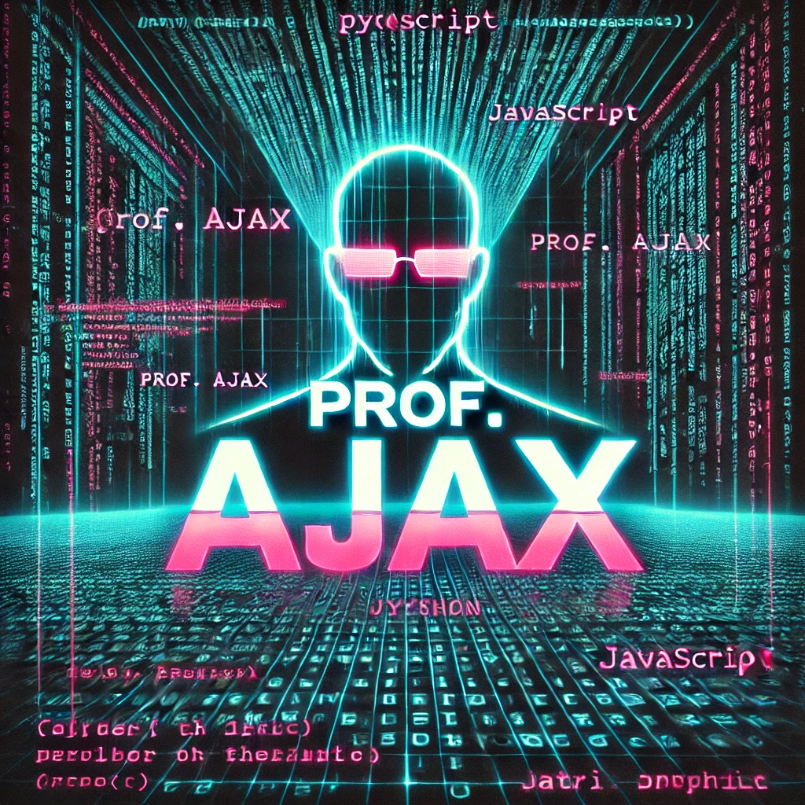
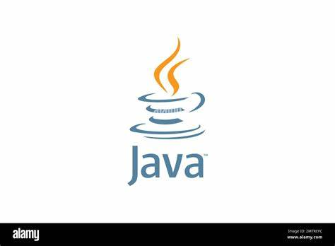
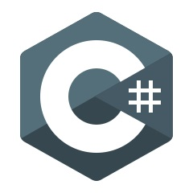
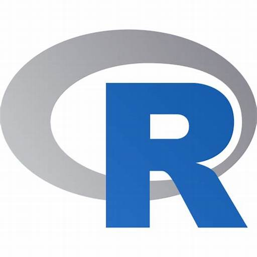

ython é uma linguagem de programação gratuita e de código aberto, projetada para ser acessível e funcional. Diferentemente de linguagens compiladas como Java ou C++, Python é interpretada, ou seja, seu código é executado diretamente, sem a necessidade de compilação. Essa característica, combinada com sua sintaxe clara e legível, faz dela uma ferramenta poderosa para desenvolvimento de projetos de qualquer escala.
 Java é uma linguagem de programação e também uma plataforma de computação lançada no ano de 1995. A empresa responsável pelo desenvolvimento da mesma foi a Sun Microsystems.
Uma enorme quantidade de aplicativos e sites hoje em dia usam Java e não funcionarão a menos que se tenha ele instalado. E para se ter um maior desempenho ao rodar programas e aplicativos, a versão mais recente dessa plataforma deve ser instalada.
O código do Java é convertido em bytecode, que é um formato qual os humanos não possuem a capacidade de ler, o que ajuda a garantir proteção contra vírus e outros.
Com o código escrito, pode-se usá-lo em diferentes projetos sem ter que começar tudo do zero. Sendo uma linguagem de programação orientada a objetos, ela ainda possibilita o agrupamento de objetos que podem ser usados em projetos, economizando seu tempo.
 C# é uma linguagem de programação criada pela Microsoft em 2000. O nome da linguagem não tem mais de uma explicação. Alguns dizem que segue a lógica de C++, que tinha a orientação a objetos e se tornava um pouco mais avançada que a linguagem C.
Outros dizem que o nome vem da nota musical, dó sustenido, já que ela está presente na música “Moonlight Sonata”, de Beethoven, a qual Bill Gates e Anders Hejlsberg, o fundador da linguagem, gostavam muito.
 R nasceu nos anos 90, na Nova Zelândia, criado por dois caras geniais, Ross Ihaka e Robert Gentleman.
Eles queriam uma linguagem que fosse uma alternativa mais moderna ao S, uma linguagem de programação estatística que já existia. E assim, R veio ao mundo!
Hoje, a linguagem é mantida por um time chamado R Core Group e tem uma comunidade gigantesca de usuários e desenvolvedores ao redor do globo.
A linguagem é voltada, principalmente, para análise estatística, manipulação de dados e visualização gráfica.